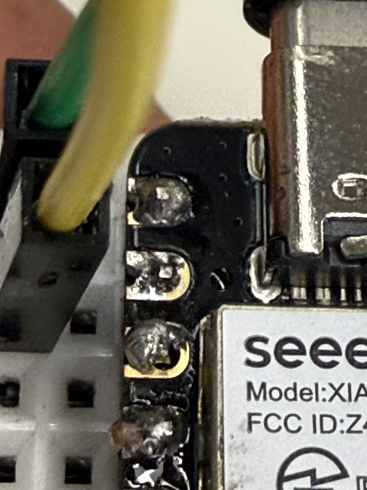
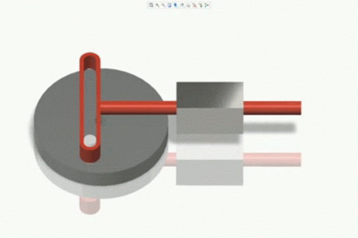
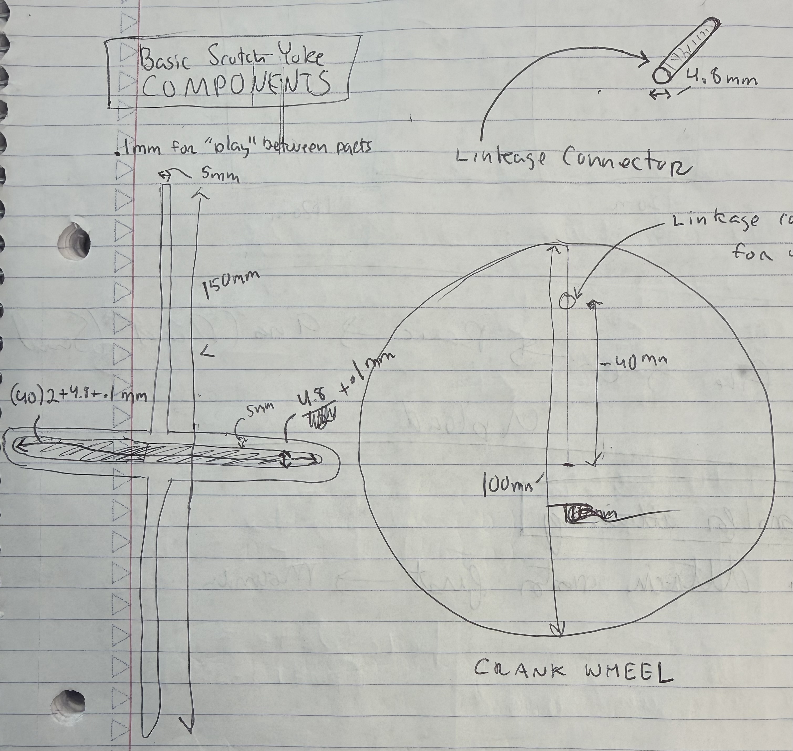
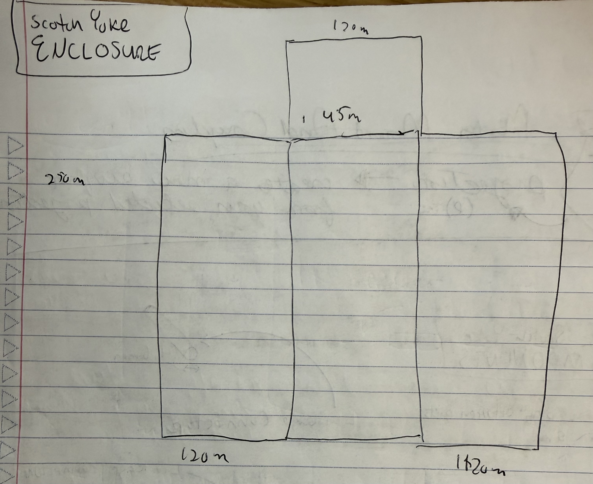
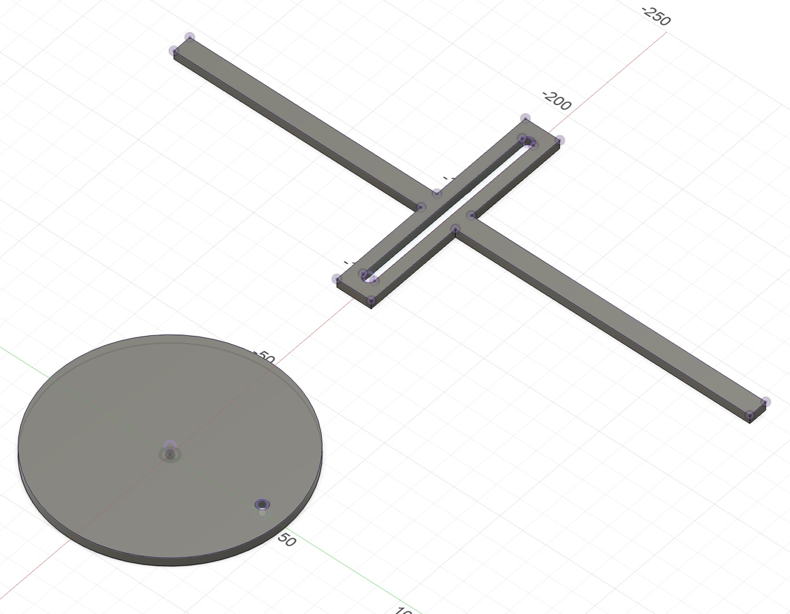
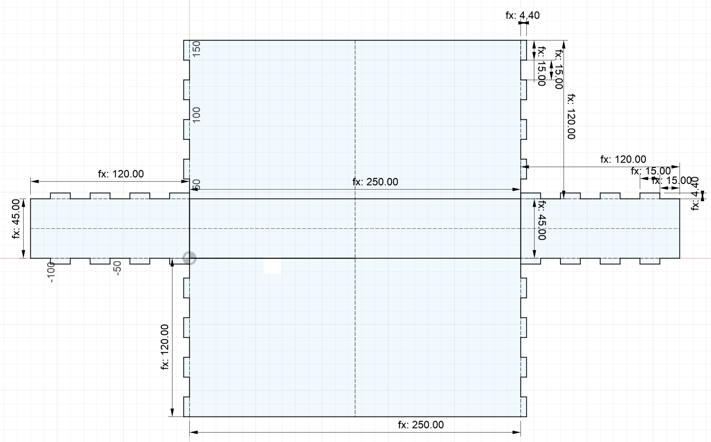
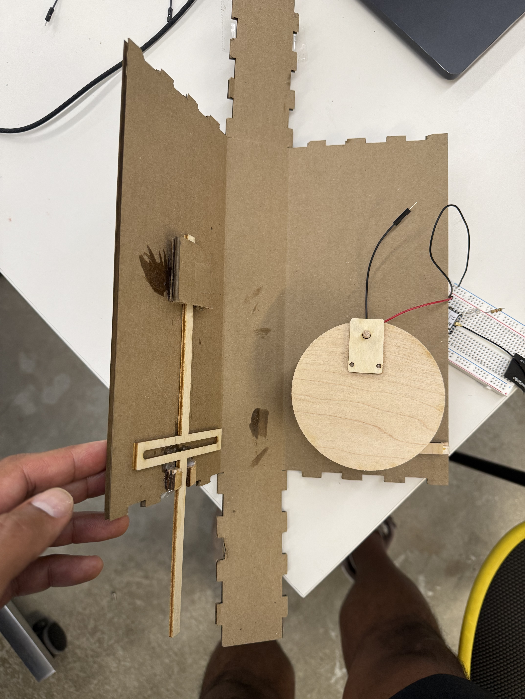
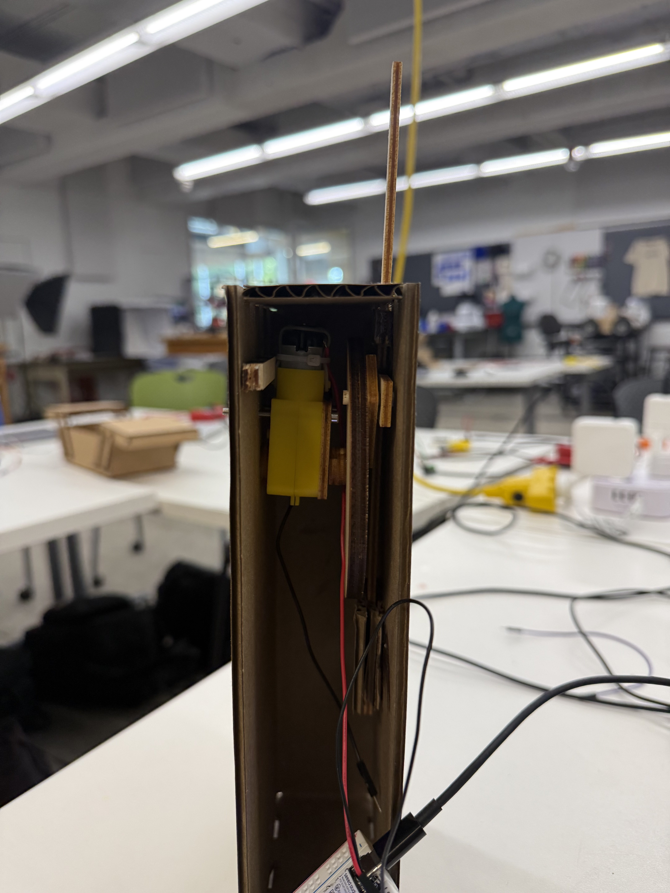

I set out to design a kinetic sculpture machine base don the Scotch Yoke mechanism:

It transforms a rotational force into an oscillating vertical force. The effect is a motor producing a piston like action. My idea was to mount some type of plane-like animal (e.g. butterfly or bird shape) at the end which would be articualted by the vertical oscillation of the yoke.
This was a lot of fun even though my machine was not successful. We had < 36 hours to design, fabricate, assemble, and test this sculpture. We couldn't spend too much time theorizing, we just had to build and iterate. Ultimatley my machine could only execute .5 to .75 revolutions when motorized before the crankwheel jammed. This was due to wobble of the crankwheel due to a mount that wasn't rigid enough to prevent it.
I will remake the mounting point at some point this summer and re-use my enclosure, yoke, and crankwheel.




The sketches were for a crank wheel, a yoke mechanism, and an eclosure. I was able to use my box model from previous project with simple paramter changes to produce a cardboard enclosure.
Having a correct parametric model made it easy to re-use it across projects. Because my box design held its constraints across parameter value changes I could re-use it for my scotch_yoke_enclosure very easily! It was worth the extra cycles for time savings later.

Yoke sits in super-glued mounts to support its slide and prevent it from falling. Crankwheel has a small dowel that fits into the yoke when enclosure is closed. Open side allows wires from motor to breadboard.

Section shows components interlocking. You can see that if the flat part of the crankwheel had a support to sit flush it wouldn't wobble. Instead, somewhere along the rotation, it wobbled and put a force against the horizontal yoke slide which caused it to sieze. Similarly the mount for the dowel would catch against the yoke during wobble as well, creating a sharper sieze. Must prevent wobble next time
I was able to manually articulate the mechanism, but motorization exposed the issues quickly.